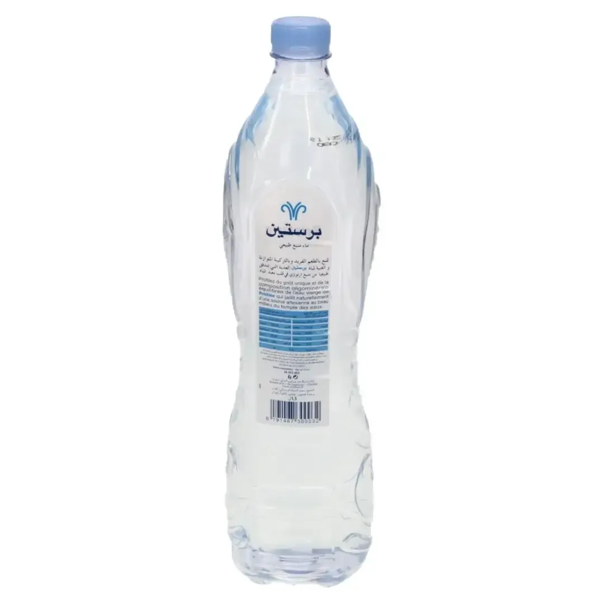

Prix de l'eau Pristine en Tunisie
Bouteille et stika, mis à jour le 26 septembre 2026
L'eau Pristine est vendue en 50 cl, 98 cl, 1 L, 1,5 L et 2 L chez Aziza, Carrefour et Géant. La bouteille la moins chère coûte 0,430 DT (50 cl chez Carrefour). Une stika de 6 bouteilles de 1 L revient à 3,720 DT (6 × prix bouteille). Au litre, Pristine 1,5 L est classée 11e sur 21 marques en 1,5 L.
| Format | Bouteille | Stika | Magasins |
|---|---|---|---|
| 50 cl 0,860 DT/L | 0,430 DT | 5,160 DT* 12 bouteilles | Carrefour 0,430 DT |
| 98 cl 0,694 DT/L | 0,680 DT | 4,080 DT* 6 bouteilles | Géant 0,680 DT |
| 1 L 0,620 DT/L | 0,620 DT | 3,720 DT* 6 bouteilles | Carrefour 0,620 DT |
| 1,5 L 0,427 DT/L | 0,640 DT | 3,840 DT* 6 bouteilles | Carrefour 0,640 DT · Géant 0,670 DT |
| 2 L 0,312 DT/L | 0,790 DT | 3,750 DT 6 bouteilles | Carrefour 0,790 DT · Géant 0,800 DT · Aziza stika 3,750 DT |